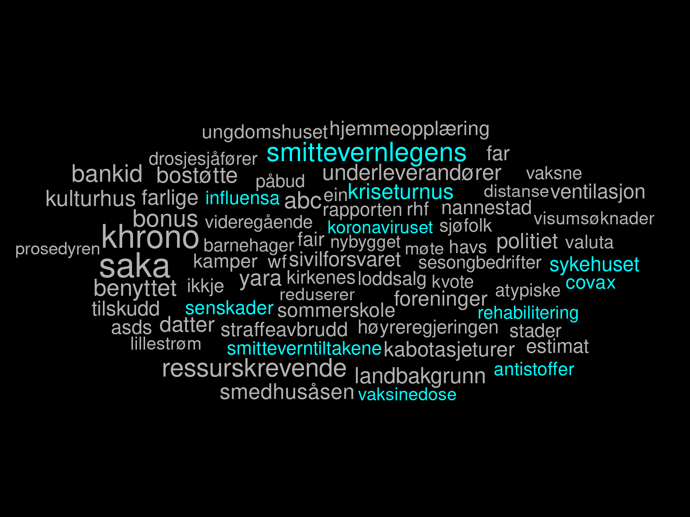

[05] Bruke API (Stortinget)

Martin Søyland <martin.soyland@stv.uio.no>
Disposisjon
- Stortingets API oversikt üìú
- .xml-formatet ü§∑
- stortingscrape üêª
- Oppgavene üôà
Stortingets API – oversikt
Kobling mellom deler av API (eksempel)
Parlamentariske perioder
├── "2001-2005", "2017-2021", osv
└── https://data.stortinget.no/eksport/stortingsperioder
└── Representanter i en periode
└── "GHB", "SIVJ", "EIGE", "ALYS", osv
├── Representantdata
│ └── https://data.stortinget.no/eksport/person?personid=GHB
├── Biografisk representantdata
│ └── https://data.stortinget.no/eksport/kodetbiografi?personid=EIGE
└── Bilde av representant
└── https://data.stortinget.no/eksport/personbilde?personid=ALYS
.xml-formatet
- APIer gir somregel enten
.xmleller.json - Vi bruker
.xmli dag- det gjør også
stortingscrape
- det gjør også
.xmldet ligner på.html- Kan leses med
rvest::read_html()- går bakvei via pakken
xml2
- går bakvei via pakken
- (Hvis du treffer på
.json->jsonlite) ü§†
Rå .xml
## <?xml version="1.0" encoding="utf8"?>
## <sesjoner_oversikt xmlns:i="http://www.w3.org/2001/XMLSchema-instance" xmlns="http://data.stortinget.no">
## <respons_dato_tid>2022-09-15T11:22:49.3940964+02:00</respons_dato_tid>
## <versjon>1.6</versjon>
## <innevaerende_sesjon>
## <respons_dato_tid>2022-09-15T11:22:49.378468+02:00</respons_dato_tid>
## <versjon>1.6</versjon>
## <fra>2021-10-01T00:00:00+02:00</fra>
## <id>2021-2022</id>
## <til>2022-09-30T23:59:00</til>
## </innevaerende_sesjon>
## <sesjoner_liste>
## <sesjon>
## <respons_dato_tid>2022-09-15T11:22:49.3940964+02:00</respons_dato_tid>
## <versjon>1.6</versjon>
## <fra>2024-10-01T00:00:00+02:00</fra>
## <id>2024-2025</id>
## <til>2025-09-30T23:59:00</til>
## </sesjon>
## <sesjon>
## <respons_dato_tid>2022-09-15T11:22:49.3940964+02:00</respons_dato_tid>
## <versjon>1.6</versjon>
## <fra>2023-10-01T00:00:00+02:00</fra>
## <id>2023-2024</id>
## <til>2024-09-30T23:59:00</til>
## </sesjon>
## <sesjon>
## <respons_dato_tid>2022-09-15T11:22:49.3940964+02:00</respons_dato_tid>
## <versjon>1.6</versjon>
## <fra>2022-10-01T00:00:00+02:00</fra>
## <id>2022-2023</id>
## <til>2023-09-30T23:59:00</til>
## </sesjon>
## <sesjon>
## <respons_dato_tid>2022-09-15T11:22:49.3940964+02:00</respons_dato_tid>
## <versjon>1.6</versjon>
## <fra>2021-10-01T00:00:00+02:00</fra>
## <id>2021-2022</id>
## <til>2022-09-30T23:59:00</til>
## </sesjon>
## <sesjon>
## <respons_dato_tid>2022-09-15T11:22:49.3940964+02:00</respons_dato_tid>
## <versjon>1.6</versjon>
## <fra>2020-10-01T00:00:00+02:00</fra>
## <id>2020-2021</id>
## <til>2021-09-30T23:59:00</til>
## </sesjon>
## <sesjon>
## <respons_dato_tid>2022-09-15T11:22:49.3940964+02:00</respons_dato_tid>
## <versjon>1.6</versjon>
## <fra>2019-10-01T00:00:00+02:00</fra>
## <id>2019-2020</id>
## <til>2020-09-30T23:59:00</til>
## </sesjon>
## <sesjon>
## <respons_dato_tid>2022-09-15T11:22:49.3940964+02:00</respons_dato_tid>
## <versjon>1.6</versjon>
## <fra>2018-10-01T00:00:00+02:00</fra>
## <id>2018-2019</id>
## <til>2019-09-30T23:59:00</til>
## </sesjon>
## <sesjon>
## <respons_dato_tid>2022-09-15T11:22:49.3940964+02:00</respons_dato_tid>
## <versjon>1.6</versjon>
## <fra>2017-10-01T00:00:00+02:00</fra>
## <id>2017-2018</id>
## <til>2018-09-30T23:59:00</til>
## </sesjon>
## <sesjon>
## <respons_dato_tid>2022-09-15T11:22:49.3940964+02:00</respons_dato_tid>
## <versjon>1.6</versjon>
## <fra>2016-10-01T00:00:00+02:00</fra>
## <id>2016-2017</id>
## <til>2017-09-30T23:59:00</til>
## </sesjon>
## <sesjon>
## <respons_dato_tid>2022-09-15T11:22:49.3940964+02:00</respons_dato_tid>
## <versjon>1.6</versjon>
## <fra>2015-10-01T00:00:00+02:00</fra>
## <id>2015-2016</id>
## <til>2016-09-30T23:59:00</til>
## </sesjon>
## <sesjon>
## <respons_dato_tid>2022-09-15T11:22:49.3940964+02:00</respons_dato_tid>
## <versjon>1.6</versjon>
## <fra>2014-10-01T00:00:00+02:00</fra>
## <id>2014-2015</id>
## <til>2015-09-30T23:59:00</til>
## </sesjon>
## <sesjon>
## <respons_dato_tid>2022-09-15T11:22:49.3940964+02:00</respons_dato_tid>
## <versjon>1.6</versjon>
## <fra>2013-10-01T00:00:00+02:00</fra>
## <id>2013-2014</id>
## <til>2014-09-30T23:59:00</til>
## </sesjon>
## <sesjon>
## <respons_dato_tid>2022-09-15T11:22:49.3940964+02:00</respons_dato_tid>
## <versjon>1.6</versjon>
## <fra>2012-10-01T00:00:00+02:00</fra>
## <id>2012-2013</id>
## <til>2013-09-30T23:59:00</til>
## </sesjon>
## <sesjon>
## <respons_dato_tid>2022-09-15T11:22:49.3940964+02:00</respons_dato_tid>
## <versjon>1.6</versjon>
## <fra>2011-10-01T00:00:00+02:00</fra>
## <id>2011-2012</id>
## <til>2012-09-30T23:59:00</til>
## </sesjon>
## <sesjon>
## <respons_dato_tid>2022-09-15T11:22:49.3940964+02:00</respons_dato_tid>
## <versjon>1.6</versjon>
## <fra>2010-10-01T00:00:00+02:00</fra>
## <id>2010-2011</id>
## <til>2011-09-30T23:59:00</til>
## </sesjon>
## <sesjon>
## <respons_dato_tid>2022-09-15T11:22:49.3940964+02:00</respons_dato_tid>
## <versjon>1.6</versjon>
## <fra>2009-10-01T00:00:00+02:00</fra>
## <id>2009-2010</id>
## <til>2010-09-30T23:59:00</til>
## </sesjon>
## <sesjon>
## <respons_dato_tid>2022-09-15T11:22:49.3940964+02:00</respons_dato_tid>
## <versjon>1.6</versjon>
## <fra>2008-10-01T00:00:00+02:00</fra>
## <id>2008-2009</id>
## <til>2009-09-30T23:59:00</til>
## </sesjon>
## <sesjon>
## <respons_dato_tid>2022-09-15T11:22:49.3940964+02:00</respons_dato_tid>
## <versjon>1.6</versjon>
## <fra>2007-10-01T00:00:00+02:00</fra>
## <id>2007-2008</id>
## <til>2008-09-30T23:59:00</til>
## </sesjon>
## <sesjon>
## <respons_dato_tid>2022-09-15T11:22:49.3940964+02:00</respons_dato_tid>
## <versjon>1.6</versjon>
## <fra>2006-10-01T00:00:00+02:00</fra>
## <id>2006-2007</id>
## <til>2007-09-30T23:59:00</til>
## </sesjon>
## <sesjon>
## <respons_dato_tid>2022-09-15T11:22:49.3940964+02:00</respons_dato_tid>
## <versjon>1.6</versjon>
## <fra>2005-10-01T00:00:00+02:00</fra>
## <id>2005-2006</id>
## <til>2006-09-30T23:59:00</til>
## </sesjon>
## <sesjon>
## <respons_dato_tid>2022-09-15T11:22:49.3940964+02:00</respons_dato_tid>
## <versjon>1.6</versjon>
## <fra>2004-10-01T00:00:00+02:00</fra>
## <id>2004-2005</id>
## <til>2005-09-30T23:59:00</til>
## </sesjon>
## <sesjon>
## <respons_dato_tid>2022-09-15T11:22:49.3940964+02:00</respons_dato_tid>
## <versjon>1.6</versjon>
## <fra>2003-10-01T00:00:00+02:00</fra>
## <id>2003-2004</id>
## <til>2004-09-30T23:59:00</til>
## </sesjon>
## <sesjon>
## <respons_dato_tid>2022-09-15T11:22:49.3940964+02:00</respons_dato_tid>
## <versjon>1.6</versjon>
## <fra>2002-10-01T00:00:00+02:00</fra>
## <id>2002-2003</id>
## <til>2003-09-30T23:59:00</til>
## </sesjon>
## <sesjon>
## <respons_dato_tid>2022-09-15T11:22:49.3940964+02:00</respons_dato_tid>
## <versjon>1.6</versjon>
## <fra>2001-10-01T00:00:00+02:00</fra>
## <id>2001-2002</id>
## <til>2002-09-30T23:59:00</til>
## </sesjon>
## <sesjon>
## <respons_dato_tid>2022-09-15T11:22:49.3940964+02:00</respons_dato_tid>
## <versjon>1.6</versjon>
## <fra>2000-10-01T00:00:00+02:00</fra>
## <id>2000-2001</id>
## <til>2001-09-30T23:59:00</til>
## </sesjon>
## <sesjon>
## <respons_dato_tid>2022-09-15T11:22:49.3940964+02:00</respons_dato_tid>
## <versjon>1.6</versjon>
## <fra>1999-10-01T00:00:00+02:00</fra>
## <id>1999-2000</id>
## <til>2000-09-30T23:59:00</til>
## </sesjon>
## <sesjon>
## <respons_dato_tid>2022-09-15T11:22:49.3940964+02:00</respons_dato_tid>
## <versjon>1.6</versjon>
## <fra>1998-10-01T00:00:00+02:00</fra>
## <id>1998-99</id>
## <til>1999-09-30T23:59:00</til>
## </sesjon>
## <sesjon>
## <respons_dato_tid>2022-09-15T11:22:49.3940964+02:00</respons_dato_tid>
## <versjon>1.6</versjon>
## <fra>1997-10-01T00:00:00+02:00</fra>
## <id>1997-98</id>
## <til>1998-09-30T23:59:00</til>
## </sesjon>
## <sesjon>
## <respons_dato_tid>2022-09-15T11:22:49.3940964+02:00</respons_dato_tid>
## <versjon>1.6</versjon>
## <fra>1996-10-01T00:00:00+02:00</fra>
## <id>1996-97</id>
## <til>1997-09-30T23:59:00</til>
## </sesjon>
## <sesjon>
## <respons_dato_tid>2022-09-15T11:22:49.3940964+02:00</respons_dato_tid>
## <versjon>1.6</versjon>
## <fra>1995-10-01T01:00:00+02:00</fra>
## <id>1995-96</id>
## <til>1996-09-30T23:59:00</til>
## </sesjon>
## <sesjon>
## <respons_dato_tid>2022-09-15T11:22:49.3940964+02:00</respons_dato_tid>
## <versjon>1.6</versjon>
## <fra>1994-10-01T01:00:00+02:00</fra>
## <id>1994-95</id>
## <til>1995-09-30T23:59:00</til>
## </sesjon>
## <sesjon>
## <respons_dato_tid>2022-09-15T11:22:49.3940964+02:00</respons_dato_tid>
## <versjon>1.6</versjon>
## <fra>1993-10-01T01:00:00+02:00</fra>
## <id>1993-94</id>
## <til>1994-09-30T23:59:00</til>
## </sesjon>
## <sesjon>
## <respons_dato_tid>2022-09-15T11:22:49.3940964+02:00</respons_dato_tid>
## <versjon>1.6</versjon>
## <fra>1992-10-01T01:00:00+02:00</fra>
## <id>1992-93</id>
## <til>1993-09-30T23:59:00</til>
## </sesjon>
## <sesjon>
## <respons_dato_tid>2022-09-15T11:22:49.3940964+02:00</respons_dato_tid>
## <versjon>1.6</versjon>
## <fra>1991-10-01T01:00:00+02:00</fra>
## <id>1991-92</id>
## <til>1992-09-30T23:59:00</til>
## </sesjon>
## <sesjon>
## <respons_dato_tid>2022-09-15T11:22:49.3940964+02:00</respons_dato_tid>
## <versjon>1.6</versjon>
## <fra>1990-10-01T01:00:00+02:00</fra>
## <id>1990-91</id>
## <til>1991-09-30T23:59:00</til>
## </sesjon>
## <sesjon>
## <respons_dato_tid>2022-09-15T11:22:49.3940964+02:00</respons_dato_tid>
## <versjon>1.6</versjon>
## <fra>1989-10-01T01:00:00+02:00</fra>
## <id>1989-90</id>
## <til>1990-09-30T23:59:00</til>
## </sesjon>
## <sesjon>
## <respons_dato_tid>2022-09-15T11:22:49.3940964+02:00</respons_dato_tid>
## <versjon>1.6</versjon>
## <fra>1988-10-01T01:00:00+02:00</fra>
## <id>1988-89</id>
## <til>1989-09-30T23:59:00</til>
## </sesjon>
## <sesjon>
## <respons_dato_tid>2022-09-15T11:22:49.3940964+02:00</respons_dato_tid>
## <versjon>1.6</versjon>
## <fra>1987-10-01T01:00:00+02:00</fra>
## <id>1987-88</id>
## <til>1988-09-30T23:59:00</til>
## </sesjon>
## <sesjon>
## <respons_dato_tid>2022-09-15T11:22:49.3940964+02:00</respons_dato_tid>
## <versjon>1.6</versjon>
## <fra>1986-10-01T01:00:00+02:00</fra>
## <id>1986-87</id>
## <til>1987-09-30T23:59:00</til>
## </sesjon>
## </sesjoner_liste>
## </sesjoner_oversikt>Strukturere .xml
# Leser rå xml-fil
## sesjoner <- read_html("https://data.stortinget.no/eksport/sesjoner")
sesjoner## {html_document}
## <html>
## [1] <body><sesjoner_oversikt xmlns:i="http://www.w3.org/2001/XMLSchema-instan ...## {xml_nodeset (6)}
## [1] <id>2021-2022</id>
## [2] <id>2024-2025</id>
## [3] <id>2023-2024</id>
## [4] <id>2022-2023</id>
## [5] <id>2021-2022</id>
## [6] <id>2020-2021</id># Trekker ut sesjonstart
sesjoner %>%
html_elements("sesjoner_liste > sesjon > fra") %>%
html_text() %>%
as.Date() %>%
head()## [1] "2024-10-01" "2023-10-01" "2022-10-01" "2021-10-01" "2020-10-01"
## [6] "2019-10-01"# Trekker ut sesjonslutt
sesjoner %>%
html_elements("sesjoner_liste > sesjon > til") %>%
html_text() %>%
as.Date() %>%
head()## [1] "2025-09-30" "2024-09-30" "2023-09-30" "2022-09-30" "2021-09-30"
## [6] "2020-09-30"sesjoner_df <- tibble(
from = sesjoner %>%
html_elements("sesjoner_liste > sesjon > fra") %>%
html_text() %>%
as.Date(),
id = sesjoner %>%
html_elements("sesjoner_liste > sesjon > id") %>%
html_text(),
to = sesjoner %>%
html_elements("sesjoner_liste > sesjon > til") %>%
html_text() %>%
as.Date()
)
sesjoner_df %>%
filter(from < as.Date("2022-01-01")) %>%
head()## # A tibble: 6 × 3
## from id to
## <date> <chr> <date>
## 1 2021-10-01 2021-2022 2022-09-30
## 2 2020-10-01 2020-2021 2021-09-30
## 3 2019-10-01 2019-2020 2020-09-30
## 4 2018-10-01 2018-2019 2019-09-30
## 5 2017-10-01 2017-2018 2018-09-30
## 6 2016-10-01 2016-2017 2017-09-30Filosofi
- Brukervalg
- Sy datasett etter eget behov
- Forenkle datastrukturer
- 2 dimensionale datasett, når mulig
- Lister med datasett, hvis nødvendig
- Enkel arbeidsflyt
- Kobling av forskjellige deler av APIet
- Example: MP age and roll call votes
- Begrense duplikater i data
- Ungå at samme data hentes av flere funksjoner
Omfang

Omfang
## Stortingsperioder
## Sesjoner
## Fylker
## Emner
## Partier
## Alle partier
## Komiteer
## Alle komiteer
## Delegasjoner
## Person
## Personbilde
## Kodet personbiografi
## Representanter
## Dagens representanter
## Presidentskapet
## Regjering
## Spørsmål
## Enkeltspørsmål
## Saksganger
## Saker
## Ventede saker
## Sak
## Voteringer
## Voteringsforslag
## Voteringsvedtak
## Voteringsresultat
## Vedtak
## Møter
## Dagsorden
## Spørretimen
## Høringer
## Skriftlige innspill til høringer
## Høringsprogram
## Høringsinnspill
## Talerliste
## Publikasjoner
## Publikasjon
## PublikasjonsfigurKobling mellom deler av API
`get_parlperiods()`
└── # datasett med alle stortingsperioder>
└── `get_parlperiod_mps("2005-2009")`
└── # datasett med alle representanter for periode
├── `get_mp("SIVJ")`
│ └── # generell data om spesifikk representant
├── `get_mp_bio("SIVJ")`
│ └── # biografiske data for representant
└── `get_mp_pic("SIVJ")`
└── # bilde av representant 
Et faktisk eksempel på tekst til tall til analyse
Hypotese: Representanter på Stortinget ble mer negative til regjeringens håndtering av koronapandemien over tid.
Fremgangsmåte: hente > strukturere > konvertere > analysere
Antagelse: üö®Sentiment m√•ler negativitet/positivitet til regjeringenüö®
Hente og strukturere data
library(stortingscrape)
# Henter alle høringer i sesjonene 2019-2020 og 2020-2021
wq1920 <- get_session_questions("2019-2020",
q_type = "skriftligesporsmal",
good_manners = 2)
wq2021 <- get_session_questions("2020-2021",
q_type = "skriftligesporsmal",
good_manners = 2)
# Binder sammen de to sesjonene til ett objekt
wqs <- bind_rows(wq1920, wq2021)
# Filtrerer ut de som nevner "CoV", "koron[..]", "smittevern" eller "vaksine
covid <- wqs %>%
filter(str_detect(title, "[Cc]o[Vv]|[Kk]oron|[Ss]mittevern|[Mm]unnbind|[Vv]aksine") == TRUE)## question_from_id qustion_to_minister_title title
## 423 MKS samferdsels Ekspresstilbude[...]
## 424 TIM helse- og omsorgs Hvor mange tilf[...]
## 425 MAA landbruks- og mat Vil statsråden [...]
## 426 MAA landbruks- og mat Mener statsråde[...]Hente og strukturere data
covid$justification <- NA
for(i in 1:nrow(covid)){
tmp_question <- get_question(covid$id[i], good_manners = 1)
covid$justification[i] <- tmp_question$justification
}## [1] "Flere kommuner på Østlandet har nå påbud om munnbind i kollektivt"
## [2] "Det er nå innført påbud om munnbind i kollektivtrafikken for folk"
## [3] "I mars ble det inngått avtale mellom Luftambulansetjenesten og Lu"
## [4] "10. juli åpnet regjeringen opp for kjærester og familiemedlemmer "
## [5] "Undertegnede har den siste tiden blitt gjort kjent med at Oslo ko"
## [6] "Jeg viser til statsrådens svar på mitt spørsmål datert 28. aug. d"Fra tekst til tall
covid_tokens <- covid %>%
mutate(sendt_date = as.Date(sendt_date)) %>%
group_by(id, sendt_date) %>%
unnest_tokens(.,
output = token,
input = justification) %>%
filter(str_detect(token, "[0-9]") == FALSE) %>%
count(token) %>%
bind_tf_idf(.,
term = token,
document = id,
n = n)
covid_tokens %>% head(., 4)## # A tibble: 4 × 7
## # Groups: id, sendt_date [1]
## id sendt_date token n tf idf tf_idf
## <chr> <date> <chr> <int> <dbl> <dbl> <dbl>
## 1 77789 2019-11-11 å 2 0.0101 0.160 0.00161
## 2 77789 2019-11-11 aker 2 0.0101 5.82 0.0585
## 3 77789 2019-11-11 akuttmedisin 1 0.00503 5.82 0.0293
## 4 77789 2019-11-11 akuttmiljøet 1 0.00503 5.82 0.0293Lage stoppordliste
stop_words <- covid_tokens %>%
ungroup() %>%
group_by(token) %>%
summarize(token = unique(token),
idf = unique(idf)) %>%
arrange(idf) %>%
filter(idf < 1) %>%
pull(token)
stop_words## [1] "i" "og" "at" "til" "det" "er" "for" "av" "å"
## [10] "har" "på" "som" "med" "en" "om" "de" "ikke" "br"
## [19] "fra" "kan" "dette" "den" "et" "også" "skal" "nå"Topp TF-IDF ord

Kritikk eller informasjonssamling?
Emnemodell som alternativ
## 3 topics contained 1 words in the list: 34, 43, 87## [,1] [,2] [,3]
## [1,] "helsepersonell" "reise" "kjøretøy"
## [2,] "krav" "fly" "utsette"
## [3,] "innføre" "avinor" "fartøy"
## [4,] "utført" "reisende" "covid"
## [5,] "merverdiavgift" "toget" "yrkestransport"
## [6,] "forhandlingene" "rullestol" "gis"
## [7,] "influensavaksine" "utbruddet" "døde"
## [8,] "forskriftsendringer" "mink" "forlenget"
## [9,] "test" "kjøpe" "motorvogn"
## [10,] "helseministeren" "elektriske" "ca"
## [11,] "munnbind" "nordlandsbanen" "slippe"
## [12,] "vernes" "fullriggeren" "forskriften"Oppgavene
Læring i problemløsing!
- Er det noe du ikke får til? Feks
lapply()ellerfor()-loop?- Prøv med 1 dokument/tekst først
- Identifiser evt feil og rett opp
- Kjør loop på nytt. Virker det nå?
- Rinse and repeat
- Er du redd for å ikke få godkjent?
- Endre fokus
- “Hva kan jeg gjøre for å få best mulig innlevering?”
- Skriv det ned!
- …